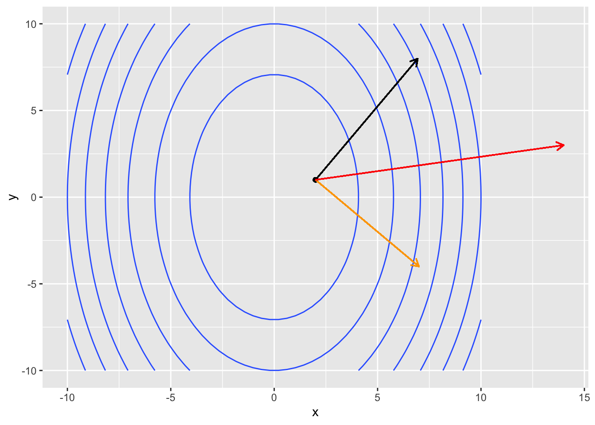

library(tidyverse)
library(plotly)
library(dasc2594)
set.seed(2021)27 The gradient and directional derivatives
Partial derivatives tell about how a rate of function changes in a particular direction (in the direction of a coordinate).
Think about trying to find the maximum of a real-valued function (finding the minimum is equivalent to finding the maximum of the negative value of the function). Finding the maximum of a function is analogous to hiking up a mountain and trying to find the highest peak.
Suppose you are standing on a mountain surface at the point \((x, y, z)\) in 3-dimensions where \(z = f(x, y)\) is the function that gives the height of the mountain at location \((x, y)\). If you are standing at the point \((a, b)\) in the \((x, y)\) coordinate system, you might want to get to the top of the mountain as quickly as possible. The direction that is the steepest uphill direction can be calculated using the concepts of the directional derivative and the gradient.
Definition 27.1 (Directional Derivative) Given a function \(f(x,y)\) that is differentiable at \((a, b)\) and a unit vector \(\mathbf{v} = \begin{pmatrix} v_1 \\ v_2 \end{pmatrix}\) in the \(x-y\) plane, the directional derivative of \(f\) at \((a, b)\) in the direction of \(\mathbf{v}\) is
\[ \begin{aligned} D_{\mathbf{v}} f(a, b) = \lim_{h \rightarrow 0} \frac{f(a + h v_1, b + h v_2) - f(a, b)}{h} \end{aligned} \]
assuming the limit exists.
To understand how the directional derivative relates to partial derivatives, in the definition above, let \(v_2 = 0\) and to make \(\mathbf{v}\) a unit vector, set \(v_1 = 1\) (\(\mathbf{v}\) is the standard basis vector \(\mathbf{e}_1\)). Then, the limit in the directional derivative definition above becomes
\[ \begin{aligned} \lim_{h \rightarrow 0} \frac{f(a + h, b) - f(a, b)}{h} \end{aligned} \]
which is the definition for the partial derivative of \(f\) in the \(x\) direction \(f_x = \frac{\partial f}{\partial x}\) (Definition @ref(def:partial)). Likewise, letting \(\mathbf{v} = \mathbf{e}_2\), the standard basis vector in the y direction, gives the partial derivative in the y direction \(f_y = \frac{\partial f}{\partial y}\). Thus, one could pick any direction vector \(\mathbf{v}\) and then calculate the partial derivative in that direction.
Now observe that any line that goes through the point \((a, b)\) in the direction of the unit vector \(\mathbf{v} \in \mathcal{R}^2\) can be written as the set of points \(\{(x = a + s v_1, y = b + s v_2) | s \in \mathcal{R} \}\) which forms a line through the point \((a, b)\) in the direction of \(\mathbf{v}\). In this definition, the value \(s\) determines the length of the vector because \(\mathbf{v}\) is a unit vector. At \(s=0\), this definition corresponds to the point \((a, b)\) and as \(s\) increases, the points \((x, y)\) are the set of points along the line that are distance \(|s|\) away from \((a, b)\). Notice that this set defines a function \(g(s) = f(a + s v_1, b + s v_2) = f(x, y)\) which is a single variable function of the two inputs \(x\) and \(y\) of \(f(x, y)\). Given this definition, the directional derivative of \(f(x, y)\) in the direction of \(\mathbf{v}\) at the point \((a, b)\) is now given by
\[ \begin{aligned} D_{\mathbf{v}} f(a, b) & = \frac{d}{ds}g(s)|_{s=0} \\ & = \frac{\partial f}{\partial x} \frac{dx}{ds} + \frac{\partial f}{\partial y} \frac{dy}{ds} |_{s=0} \\ & = f_x(a, b) v_1 + f_y(a, b) v_2 \\ & = \begin{pmatrix} f_x(a, b) & f_y(a, b) \end{pmatrix} \begin{pmatrix} v_1 \\ v_2 \end{pmatrix} \\ \end{aligned} \]
which is the dot product of the vectors \(\begin{pmatrix} f_x(a, b) \\ f_y(a, b) \end{pmatrix}\) and \(\mathbf{v}\).
Notice that the vector \(\mathbf{v}\) is a unit vector and therefore the directional derivative is a weighted sum of the partial derivatives in the \(x\) and \(y\) directions weighted by the vector \(\mathbf{v}\) (weighted sums are sums where the coefficients sum to 1–in this case the sum is in the “distance” metric). As a consequence, we can find the directional derivative in any direction by changing the vector \(\mathbf{v}\).
Definition 27.2 (The Directional Derivative) Let \(f(x, y)\) be a differentiable function at \((a, b)\) and \(\mathbf{v} = \begin{pmatrix} v_1 \\ v_2 \end{pmatrix}\) a unit vector in the \(xy\) plane. Then, the directional derivative of \(f\) at \((a, b)\) in the direction of \(\mathbf{v}\) is
\[ \begin{aligned} D_{\mathbf{v}} f(a, b) & = \begin{pmatrix} \frac{\partial f(x, y)}{\partial x}|_{(x,y) = (a, b)} & \frac{\partial f(x, y)}{\partial y}|_{(x,y) = (a, b)} \end{pmatrix} \begin{pmatrix} v_1 \\ v_2 \end{pmatrix} \\ \end{aligned} \]
Example 27.1 Compute the directional derivative of \(f(x, y) = 3x^2 + y^2\) in the direction of \(\mathbf{u} = \begin{pmatrix} \frac{1}{\sqrt{3}}, \frac{\sqrt{2}}{\sqrt{3}} \end{pmatrix}\) and \(\mathbf{v} = \begin{pmatrix} \frac{1}{\sqrt{2}}, - \frac{1}{\sqrt{2}} \end{pmatrix}\) at the point \((2, 1)\).
- calculate the directional derivatives
- graph the directional derivatives using contour plots and segments
# the function
target_fun <- function(x, y) {
3 * x^2 + y^2
}
# the gradient function
gradient_fun <- function(x, y) {
c(6*x, 2 * y)
}
# define the unit vectors u and v
u <- c(1 / sqrt(3), sqrt(2/3))
v <- c(1 / sqrt(2), -1 / sqrt(2))
# create a set of gridpoints for plotting the function
N <- 50
x <- seq(-10, 10, length.out = N)
y <- seq(-10, 10, length.out = N)
dat <- expand_grid(x = x, y = y) %>%
mutate(z = target_fun(x, y))
# define the point (a, b)
a <- 2
b <- 1
# directional derivative of f in the direction of u
Du_ab <- sum(gradient_fun(a, b) * u)
Du_ab[1] 8.561196Dv_ab <- sum(gradient_fun(a, b) * v)
Dv_ab[1] 7.071068q <- c(1, 0)
Dq_ab <- sum(gradient_fun(a, b) * q)
Dq_ab[1] 12# generate the plot
ggplot(dat, aes(x = x, y = y, z = z)) +
geom_contour() +
geom_point(aes(x = a, y = b)) +
geom_segment(aes(x = a, y = b, xend = a + u[1] * Du_ab, yend = b + u[2] * Du_ab),
arrow = arrow(length = unit(0.1, "in"))) +
geom_segment(aes(x = a, y = b, xend = a + v[1] * Dv_ab, yend = b + v[2] * Dv_ab),
arrow = arrow(length = unit(0.1, "in")), color = "orange") +
geom_segment(aes(x = a, y = b, xend = a + gradient_fun(a, b)[1], yend = b + gradient_fun(a, b)[2]),
arrow = arrow(length = unit(0.1, "in")), color = "red") 
27.1 The Gradient
The directional derivative is a dot product of the partial derivatives and a unit vector. The gradient is similar, but rather than return a single value (a number), the gradient returns a vector at a point \((a, b)\).
Definition 27.3 (The Gradient) Let \(f(x, y)\) be a differentiable function at \((a, b)\). Then, the gradient of \(f\) at \((a, b)\) is
\[ \begin{aligned} \nabla f(a, b) & = \begin{pmatrix} \frac{\partial f(x, y)}{\partial x}|_{(x,y) = (a, b)} & \frac{\partial f(x, y)}{\partial y}|_{(x,y) = (a, b)} \end{pmatrix} \\ & = \frac{\partial f(x, y)}{\partial x}|_{(x,y) = (a, b)} \mathbf{e}_1 + \frac{\partial f(x, y)}{\partial y}|_{(x,y) = (a, b)} \mathbf{e}_2, \end{aligned} \]
where \(\mathbf{e}_1 = \begin{pmatrix} 1 \\ 0 \end{pmatrix}\) and \(\mathbf{e}_2 = \begin{pmatrix} 0 \\ 1 \end{pmatrix}\) are the standard basis vectors in \(\mathcal{R}^2\).
Notice that the directional derivative at the point \((a , b)\) can be calculated using the gradient where
\[ \begin{aligned} D_{\mathbf{v}} f(a, b) & = \nabla f(a, b) \cdot \mathbf{v} \\ & = \begin{pmatrix} \frac{\partial f(x, y)}{\partial x}|_{(x,y) = (a, b)} & \frac{\partial f(x, y)}{\partial y}|_{(x,y) = (a, b)} \end{pmatrix} \begin{pmatrix} v_1 \\ v_2 \end{pmatrix} \end{aligned} \]
the directional derivative is the dot product of the gradient \(\nabla f(a, b)\) at the point \((a, b)\) with the unit vector \(\mathbf{v}\).
Example 27.2 Compute the gradient of \(f(x, y) = 3x^2 + y^2\) at the point \((3, 1)\).
- calculate the gradient
- graph the gradient using contour plots and segments
The gradient is critical in data science because is the tool that allows for finding the set of parameters for a given model that are “most likely” given the data. The gradient has the property in that at each point \((a, b)\) where \(f(x, y)\) is differentiable, the gradient points in the direction of the maximum rate of change.
Theorem 27.1 (The gradient and rates of change) Let \(f(x, y)\) be a differentiable function at \((a, b)\) with \(\nabla f(a, b) \neq 0\). Then,
\(f\) has its maximum rate of increase at the point \((a, b)\) in the direction of the gradient \(\nabla f(a, b)\). Because the gradient is a weighted sum of the partial derivatives and the unit vector in the direction of the maximum change, the magnitude of the rate of change is \(\|\nabla f(a, b)\|\) which is the length of the gradient vector.
\(f\) has its maximum rate of decrease at the point \((a, b)\) in the direction of the gradient \(-\nabla f(a, b)\). The rate of change in the direction of maximum rate of decrease is \(-\|\nabla f(a, b)\|\).
The directional derivative is 0 in any direction orthogonal to \(\nabla f(a, b)\).
Example 27.3 Consider the function \(f(x, y) = 3x^2 - 2xy + y^2\). At the point \((3, 1)\), what is the direction of steepest descent? Steepest ascent?
- graph the function as contours and plot the gradient as a segment
27.1.1 The gradient and the tangent line
Theorem 27.1 states that the directional derivative at the point \((a, b)\) is 0 in any direction that is orthogonal to \(\nabla f(a, b)\). Because the directional derivative is the rate of change of the function in the direction of \(\mathbf{v}\), the directional derivative being 0 means that the function \(f(x, y)\) is not is not changing in the direction of the vector \(\mathbf{v}\). Therefore, we know that the vector \(\mathbf{v}\) and the vector \(\nabla f(x, y)|_{(a,b)}\) are orthogonal because the definition of the directional derivative in definition @ref(def:directional-gradient) states that
\[ \begin{aligned} D_{\mathbf{v}} f(a, b) = \nabla f(a, b) \cdot \mathbf{v} = \left(\nabla f(a, b) \right)' \mathbf{v} = 0 \end{aligned} \]
which is only true if the gradient \(\nabla f(a, b)\) is orthogonal to \(\mathbf{v}\). Because the vector \(\mathbf{v}\) points in the direction of 0 change in \(f(x,y)\), the vector \(\mathbf{v}\) is a tangent line to the level curve. See drawing
Using this, one can calculate the tangent to the level curve at the point \((a, b)\) as the dot-product equation
\[ \begin{aligned} \begin{pmatrix} f_x(x, y) & f_y(x, y) \end{pmatrix} \begin{pmatrix} x - a \\ y - b \end{pmatrix} = f_x (x-a) + f_y (y-b) = 0. \end{aligned} \]
Example 27.4 For the function \(f(x, y) = 3x^2 - 2xy + y^3\), find a vector orthogonal to the gradient \(\nabla f(a, b)\) at the point \((a, b) = (2, 1)\).
27.1.2 The gradient in higher dimensions
We can extend the gradient to higher dimensional functions. Let \(\mathbf{x} = \begin{pmatrix} x_1 & x_2 & \cdots & x_n \end{pmatrix}'\) be a vector in \(\mathcal{R}^n\). Then the gradient of \(f\) at a point \(\mathbf{a} = (a_1, a_2, \ldots, a_n)\) is
\[ \begin{aligned} \nabla f(\mathbf{a}) = \begin{pmatrix} \frac{\partial f(\mathbf{x})}{\partial x_1}|_{\mathbf{x} = \mathbf{a}} \\ \frac{\partial f(\mathbf{x})}{\partial x_2}|_{\mathbf{x} = \mathbf{a}} \\ \vdots \\ \frac{\partial f(\mathbf{x})}{\partial x_n}|_{\mathbf{x} = \mathbf{a}} \end{pmatrix} = \begin{pmatrix} f_{x_1}(\mathbf{a}) \\ f_{x_2}(\mathbf{a}) \\ \vdots \\ f_{x_n}(\mathbf{a}) \end{pmatrix} \end{aligned} \]